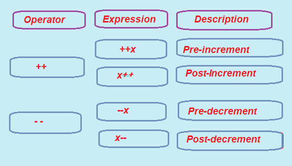

Increment and Decrement Operators in C
We shall discuss the increment (++) and decrement (--) operators within this topic section with respect to the C programming language. The increment and decrement operators are special symbols that perform a mathematical operation on given numbers or operands. They return results that are produced based on the operator applied to the operands. The increment (++) and decrement (--) operators are considered unary operators in C programming. While there are a number of unary operators supported by C, we will delve specifically into the unary increment (++) and unary decrement (--) operators in this section.
Let's first explore the increment and decrement operators in depth:
These are special types of operators in C programming that add or subtract one from the value of a variable. So let's look at each one of them now one by one.
1. Increment Operator (++)
The increment operator, which is a unary operator, is used to increase the value of an operand by one. It is denoted by the symbol ++ and adds 1 to the original value of a variable while applying this operator. The increment operator can be used in two different ways:
a. Pre-increment
In this particular increment form, the variable will be incremented by 1 and then later used in the expression. Hence it is represented by using ++x.
Example:
x = 25;
a = ++x;
Here x starts off with 25. Applying the pre-increment operator to it will lead to its incrementing by 1 to the new value of 26 just before the value is assigned to variable a. Therefore, after running the code, the value of a will contain 26.
b. Post-increment
Post-increment operator is used to increment the value of variable by 1 after using it in the expression.
Post-increment operator is represented by (x++), means value of x is incremented by 1 after using it in the expression.
e.g.
x=25
a=x++;
in the example given above the value of variable x is 25, and using the
Post-increment operator on variable x i.e (x++) increases the operand value by 1.
after assigning it to the variable ‘a’. i.e a=x++ in this expression the value of x i.e 25 is assigned to the variable a first and then it increments the value of variable x by 1.
Here the value a=25 and value of x =26
Example: Use of Pre-increment (++) and Post-Increment Operator in C language.
/* C Language Program to show Working of Increment operator(++) i.e. Pre-Increment and Post-increment. */
#include <stdio.h>
int main ()
{
int x, y, a, b; /* Local Variable Declared */
a = 10;
x = ++a; /* pre increment operator increments the value of a by 1 and assigns to x */
printf ("\n Pre Increment Operator");
printf(“ \n here the value of x is increased by 1.”);
printf (" \n The value of x is %d.", x);
printf (" \n The value of a is %d.", a);
b = 40;
y = b++; /* post increment operator assign value of b to variable y and increments the value of b by 1 */
printf (" \n\n Post Increment Operator");
printf (" \n The value of y is %d.", y);
/* Show the value of b */
printf (" \n The value of b is %d.", b);
return 0;
}
Output
Pre Increment Operator
The value of x is 11.
The value of a is 11.
Post Increment Operator
The value of y is 40.
The value of b is 41
The C program demonstrates both pre-increment and post-increment operators by beginning with the declaration of four local integer variables x, y, a, and b. First of all, a is initialized with a value of 10.
The next line contains x = ++a; which utilizes a pre-increment operator that increases the value of a before assigning it to x. That is, a becomes 11 and the same value is stored in x. Finally, the program prints a string that clearly states the application of the pre-increment operator, now showing that both values of x and a are 11.
Then, the next variable b is initialized into 40.
The next line reads: y = b++; that invokes a post-increment operator, which takes the present value of b into y and then increases b by 1. Thus, y gets that original value 40, and then b has a value of 41 after the increment. It prints the values, which will show the effect of post-increment. In effect, now y is still 40, but b has become 41.
Basically, the pre-increment (++a) and post-increment (b++) operators do behave in an entirely different manner and this is what this example presents as part of the lessons to learn regarding how they behave during an assignment.